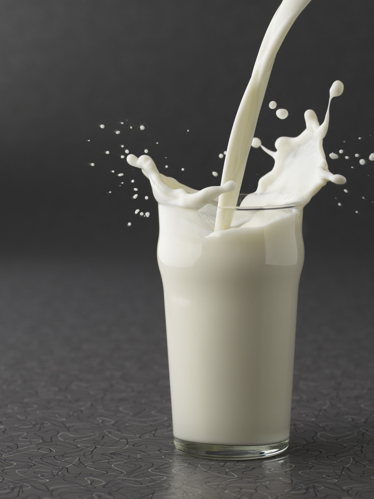

Vegetarian adalah sebutan bagi orang yang hanya makan tumbuh-tumbuhan dan tidak mengonsumsi makanan yang berasal dari makhluk hidup seperti daging dan unggas, namun masih mungkin mengonsumsi makanan laut seperti ikan, atau produk olahan hewan seperti telur, keju, atau susu.

Lacto Vegetarian
Lacto Vegetarian adalah sebutan untuk pemakan susu dan produk olahan nya
Ovo Vegetarian
Lacto Vegetarian adalah sebutan untuk pemakan susu dan produk olahan nya
Pasto Vegetarian
Lacto Vegetarian adalah sebutan untuk pemakan susu dan produk olahan nya
Vegetarian
Lacto Vegetarian adalah sebutan untuk pemakan susu dan produk olahan nya
Vegan
Lacto Vegetarian adalah sebutan untuk pemakan susu dan produk olahan nya
Frutarian
Lacto Vegetarian adalah sebutan untuk pemakan susu dan produk olahan nya